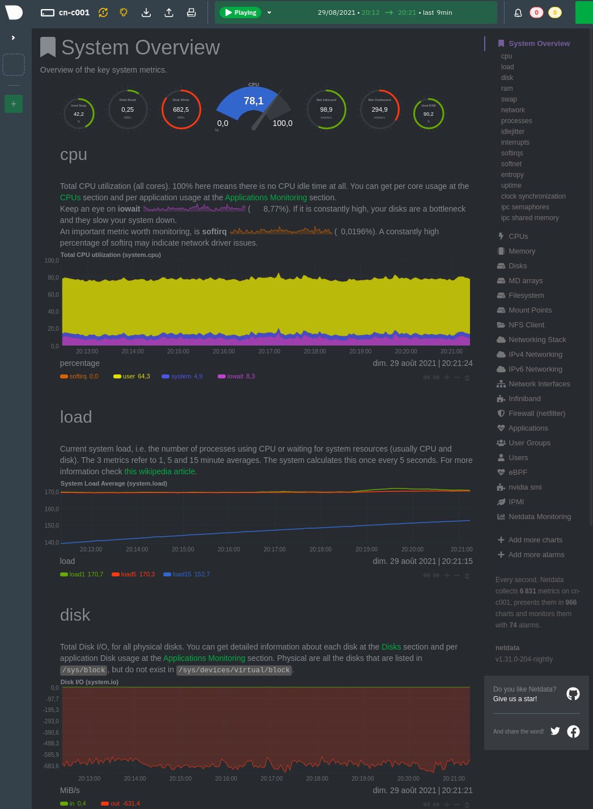
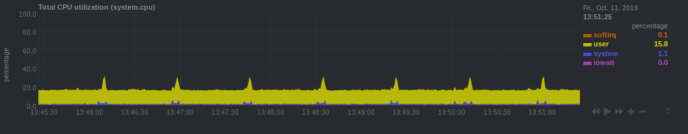
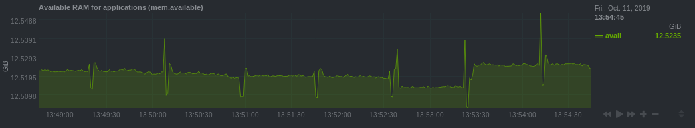
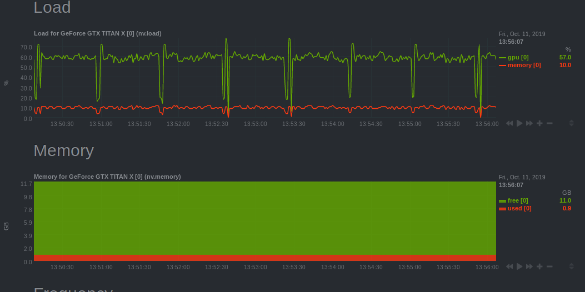
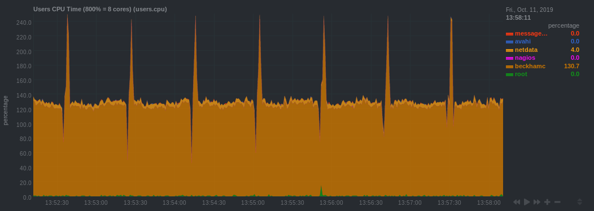
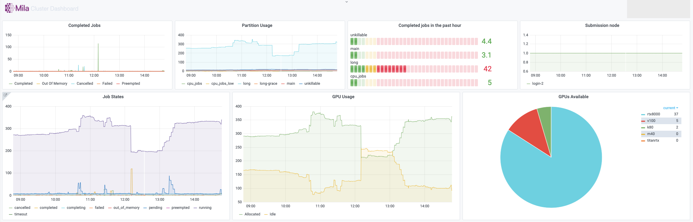

Monitoring
Every compute node on the Mila cluster has a Netdata monitoring daemon allowing you to get a sense of the state of the node. This information is exposed in two ways:
For every node, there is a web interface from Netdata itself at
<node>.server.mila.quebec:19999. This is accessible only when using the Mila wifi or through SSH tunnelling.SSH tunnelling: on your local machine, run
ssh -L 19999:<node>.server.mila.quebec:19999 -p 2222 login.server.mila.quebecor
ssh -L 19999:<node>.server.mila.quebec:19999 milaif you have already setup your SSH Login,
then open http://localhost:19999 in your browser.
The Mila dashboard at dashboard.server.mila.quebec exposes aggregated statistics with the use of grafana. These are collected internally to an instance of prometheus.
In both cases, those graphs are not editable by individual users, but they provide valuable insight into the state of the whole cluster or the individual nodes. One of the important uses is to collect data about the health of the Mila cluster and to sound the alarm if outages occur (e.g. if the nodes crash or if GPUs mysteriously become unavailable for SLURM).
Example with Netdata on cn-c001
For example, if we have a job running on cn-c001, we can type
cn-c001.server.mila.quebec:19999 in a browser address bar and the following
page will appear.

Example watching the CPU/RAM/GPU usage
Given that compute nodes are generally shared with other users who are also running jobs at the same time and consuming resources, this is not generally a good way to profile your code in fine details. However, it can still be a very useful source of information for getting an idea of whether the machine that you requested is being used in its full capacity.
Given how expensive the GPUs are, it generally makes sense to try to make sure that this resources is always kept busy.
- CPU
iowait (pink line): High values means your model is waiting on IO a lot (disk or network).

- CPU RAM
You can see how much CPU RAM is being used by your script in practice, considering the amount that you requested (e.g.
`sbatch --mem=8G ...`).GPU usage is generally more important to monitor than CPU RAM. You should not cut it so close to the limit that your experiments randomly fail because they run out of RAM. However, you should not request blindly 32GB of RAM when you actually require only 8GB.

- GPU
Monitors the GPU usage using an nvidia-smi plugin for Netdata.
Under the plugin interface, select the GPU number which was allocated to you. You can figure this out by running
echo $SLURM_JOB_GPUSon the allocated node or, if you have the job ID,scontrol show -d job YOUR_JOB_ID | grep 'GRES'and checkingIDXYou should make sure you use the GPUs to their fullest capacity.
Select the biggest batch size if possible to increase GPU memory usage and the GPU computational load.
Spawn multiple experiments if you can fit many on a single GPU. Running 10 independent MNIST experiments on a single GPU will probably take less than 10x the time to run a single one. This assumes that you have more experiments to run, because nothing is gained by gratuitously running experiments.
You can request a less powerful GPU and leave the more powerful GPUs to other researchers who have experiments that can make best use of them. Sometimes you really just need a k80 and not a v100.

- Other users or jobs
If the node seems unresponsive or slow, it may be useful to check what other tasks are running at the same time on that node. This should not be an issue in general, but in practice it is useful to be able to inspect this to diagnose certain problems.

Example with Mila dashboard
